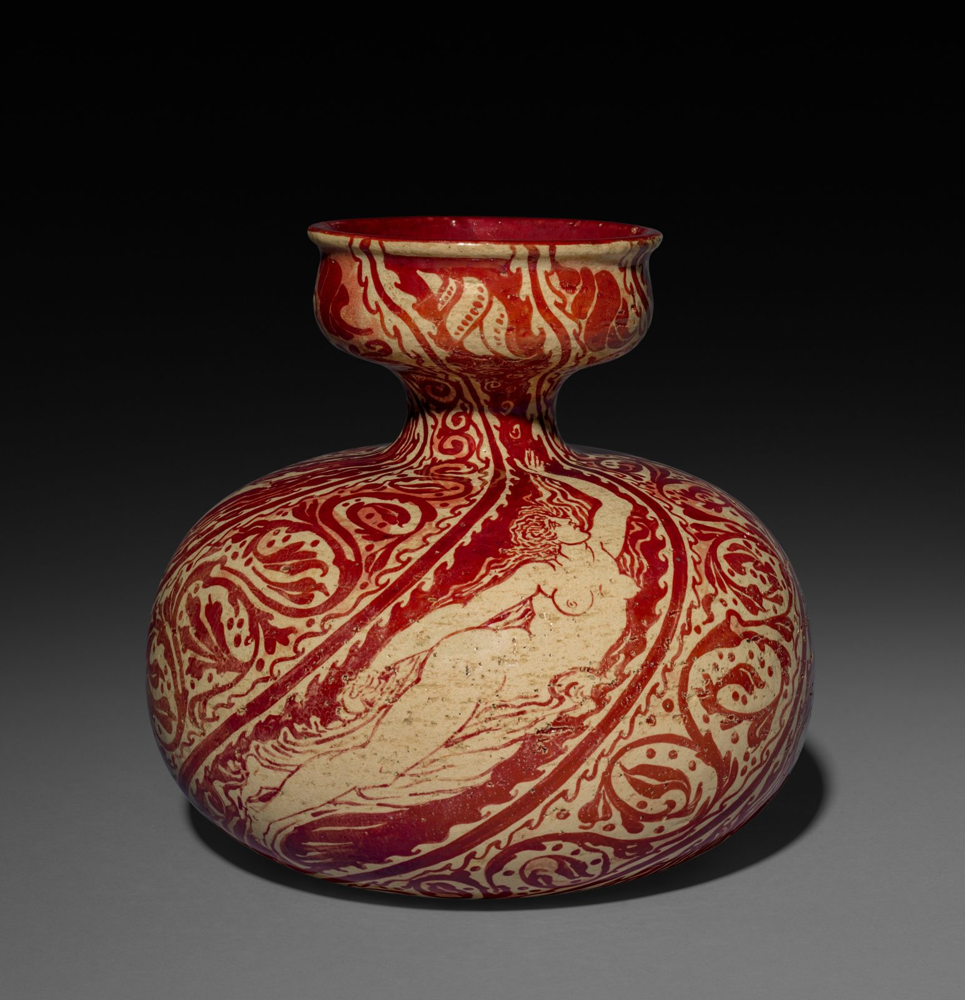

References / Product / 239
Lustre vase by Walter Crane for Maw & Co.
A squat earthenware vase in ruby lustre on which Walter Crane wrapped a spiral band with a reclining figure around a field of scrolling leaves.
- Source
- Cleveland Museum of Art: Vase, 2017.208
- Creator
- Walter Crane (designer); Maw & Co. (maker)
- Made
- 1889
- Style
- Arts and Crafts (agent-proposed, not yet reviewed by a person)
- Moods
- Lyrical, warm, handmade
- Evidence
- Downloaded and inspected the Cleveland Museum of Art open-access image of object 2017.208 (3283 × 3400 px). Only one side of the vase is shown.
- Reviewed
- Rights
- Open license, stored. License: CC0-1.0. Rights policy
Context
Cleveland calls Crane one of the leading figures of the British Arts and Crafts movement. This vase is one of a series he designed for Maw & Co. around 1889, when they were first listed in the catalogue of the Arts and Crafts Exhibition Society. Cleveland Museum of Art.
The ruby-red lustre surface is a hallmark of Maw’s work and refers to 15th- and 16th-century Spanish lustreware. Cleveland Museum of Art.
Cleveland lists it as earthenware, 22.4 × 22.7 cm, Britain, 1889. Cleveland Museum of Art.
Observed
- The vase has a wide, flattened body, a narrow neck, and a cup-shaped mouth.
- The decoration is in one colour: ruby-red lustre on a cream, slightly speckled ground.
- A broad band, outlined by two red lines, spirals around the body. Inside it a nude figure with long hair reclines, drawn in thin red lines.
- Outside the band, oval cartouches hold stylized leaves, surrounded by small scrolls and dots.
- All decoration is flat outline and fill, without shading.
Why it belongs
The flat outline drawing and the look back to Renaissance lustreware fit the movement. The diagonal band with a figure is closer to Crane’s book illustration than to the static repeats of Morris’s textiles.
Read with Strawberry Thief, it shows that the movement’s red can be a strong, glossy ceramic red as well as a printed madder.
Borrow
Use a single warm red on cream for both pattern and figure, and let the line weight carry the hierarchy.
Frame a figure inside a band with a double line, and fill the rest of the field with small, repeated leaf cartouches.
Measured
Machine-extracted by tools/image-traits.py on . Full measurement.
- Mean chroma
- 0.1
- Palette
- #040404 32%
- #747474 12%
- #0f0f0f 9%
- #60605f 4%
- #bb9b72 4%
- #1c1b1b 3%
- #ab8561 3%
- #ccb086 3%

